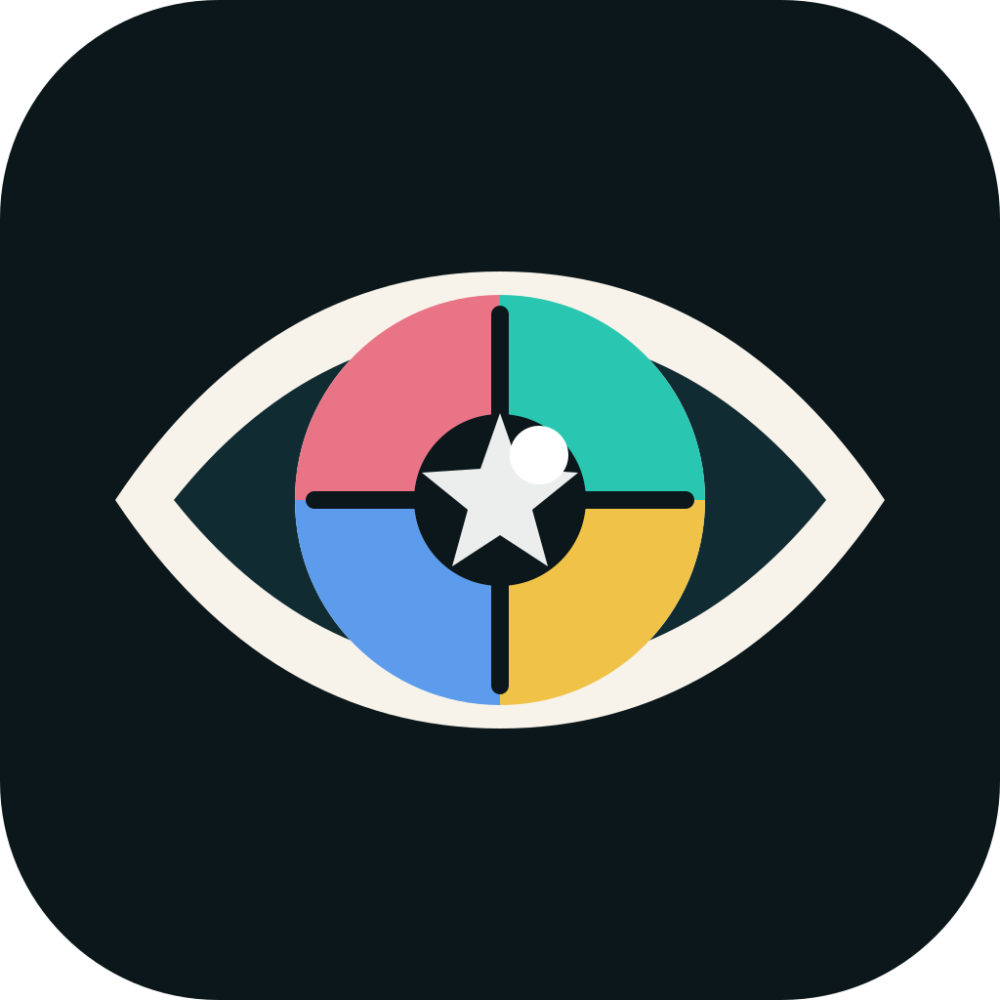

테두리가 진한 눈은 어떤 분위기일까?
자기 기준, 집중감, 첫인상 강도를 연결해 풀어보는 쇼츠 주제.

눈비티아이IRIS · MOOD · TYPE
홍채의 색, 무늬, 선, 테두리와 눈빛의 인상을 바탕으로 나의 분위기와 성향을 재미있게 탐색해보세요.
1-2분 테스트
사진 업로드 없이, 내 눈의 인상과 주변에서 듣는 표현을 선택해 결과를 확인합니다.
8가지 눈BTI
결과 유형은 단정이 아니라 눈의 인상과 자가 응답을 연결한 성향 이미지입니다.
콘텐츠 허브
자기 기준, 집중감, 첫인상 강도를 연결해 풀어보는 쇼츠 주제.
판정이 아니라 인상 차이로 보는 눈빛 유형 비교 콘텐츠.
관계에서의 거리감, 배려, 자기 보호를 부드럽게 해석합니다.
참여형 분석
구독자 눈BTI 분석은 사전 동의, 익명 처리, 삭제 요청 가능 원칙을 기준으로 운영합니다. MVP에서는 실제 업로드 대신 촬영 가이드와 신청 안내를 제공합니다.
안전한 해석
사용하지 않는 표현: 100% 맞습니다, 반드시 그렇습니다, 성격이 나쁩니다, 병이 있습니다.
사용하는 표현: 이런 분위기로 보일 수 있어요, 이런 경향으로 볼 수 있어요, 재미로 비교해보면 좋습니다.
건강 문제는 전문가와 상담해야 하며, 눈BTI는 진단을 대체하지 않습니다.